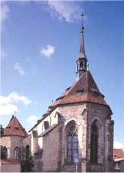
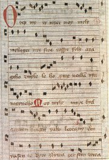
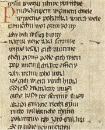
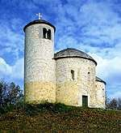
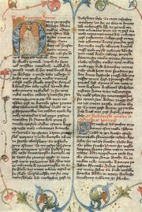
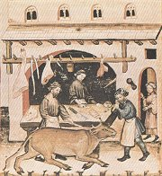
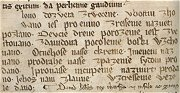
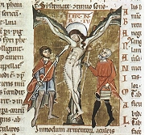
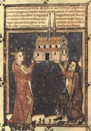

Anežský klášter v Praze
|
STAROČESKÁ LITERATURA
Ve 13. stol. nastává v Čechách kulturní rozmach. Sestra Václava I. Anežka (†1282) přivádí do Čech františkány a klarisky a sama zakládá nový řád křížovníků s červenou hvězdou. Budují se první gotické stavby (Anežský klášter, Staronová synagoga, hrad Bezděz...).
Česky psaná literatura se začíná rozvíjet od 13. stol. a ve 14. stol. je už velmi bohatá – duchovní i světská lyrika, rytířská epika, kroniky, legendy, satiry, žákovská poezie...
Ve stejné době přicházejí do Čech němečtí kolonizátoři, kteří zde zakládají první města. Až do vyhnání Němců po roce 1945 žije v Čechách významná německá menšina, která je činná i literárně. Na dvoře posledních Přemyslovců působili minnesängři Ulrich von Etzenbach a Heinrich von Meissen. Nadále pokračuje tvorba latinská.
Většina staročeských skladeb byla veršovaná. Jejich autory neznáme a názvy děl byly doplněny později.
|
Historie
Ve 13. stol. získávají čeští králové nová území a jejich vliv na dění v Evropě roste. Přemysl II. Otakar (†1278) dočasně připojuje rakouské země, Václav II. (†1305) Polsko a Uhry. Po zavraždění Václava III. (†1306) získávají český trůn Lucemburkové (1310-1437).
Co víš o sv. Anežce a sv. Zdislavě?
|
Staročeská lyrika
Staročeská lyrika se rozvíjí od 13. stol., kdy vznikly duchovní písně Svatý Václave, Ostrovská píseň (Slovo do světa stvořenie) nebo Kunhutina modlitba (Vítaj, kráľu všemohúcí). Ze 14. stol. pochází první český Spor duše s tělem a píseň Otep myrrhy. Světská lyrika se prosazuje až ve 2. polovině 14. stol. Je to např. milostná píseň Dřěvo sě listem odievá nebo dvorská skladba Závišova píseň (Jižť mne vše radost ostává).

Píseň Otep myrrhy
|
Svatý Václave
Nejstarší česká duchovní píseň Svatý Václave pochází ze 13. stol. a měla původně pouze 3 sloky, ale protože byla velmi oblíbená, přibývaly další a další. Píseň se stala jakousi českou hymnou a zpívala se při všech slavnostních příležitostech.
Závišova píseň
Autorem tzv. Závišovy písně (Jižť mne vše radost ostává) byl Záviš ze Zap u Prahy, který studoval na nejstarší evropské univerzitě v Bologni a později učil na univerzitě v Praze. Jeho skladba se může směle měřit se zahraniční dvorskou lyrikou.
|
Dřěvo sě listem odievá,
slavíček v keřku spievá.
Máji, žaluji tobě
a mécě srdce ve mdlobě.
Zvolil sem sobě milú,
ta tře mé sdrce pilú.
Pila hřěže, ach bolí,
a tvójť budu, kdeť sem koli.
Srdéčko, divím sě tobě,
že nechceš dbáci o sobě.
Tvá radost, veselé hyne
pro tu beze jmene.
Ačť bych já ji zmenoval,
mnohýť by mě štrafoval
a řka: „Proč ty tak slúžíš?
Čemu sě milostí chlubíš?"
Neustavičný milovník
jako u cěsty hřěpík:
k čemu sě koli přičiní,
a tomu všemu uškodí.
Kdoť sem, tenž nosímť pilu:
jáť mám najkrašší milú,
téť nikomu nepoviem,
sámť ji s mým srdéčcem viem.
Viera vieřě pomáhá:
kdeť sú dva sobě věrna –
on jí a ona jemu –,
nepoviedaj třeciemu.
Mnohýť sě rád honosí,
ten tajemství pronosí.
Ach naň, zlýť obyčej jmá!,
nepřejtež mu, kdoť jeho zná.
Poniž on vás tak hanie,
prosímť vás, panny i panie,
přezdiec jemu: „Ruší nás,"
vyščermež jeho pryč od nás!
Srovnej skladbu Dřevo se listem odívá se Závišovu písní. Co mají obě básně společného? V čem se liší?
|
Staročeská epika
Staročeské epické skladby byly převážně veršované. Duchovní epika přináší na počátku 14. stol. první česky psané legendy (o Jidášovi, Adamovi a Evě, sv. Jiří...). Světskou epiku reprezentují rytířské eposy Alexandreida a Tristram a Izalda, Kronika tak řečeného Dalimila a prozaické příběhy o Štilfrídovi a Bruncvíkovi.
|
Alexandreida
Alexandreida se šířila v několika verzích už v době antiky. Vyprávěla o životě krále Alexandra Makedonského, který se stal ve středověku předobrazem ideálního rytíře. Česká Alexandreida vznikla na přelomu 13. a 14. stol. Z celého textu se dochovalo jen devět zlomků (přibližně třetina veršů). Neznámý autor zřejmě znal Alexandreidu francouzského básníka Gualtera Castellionského a stejnojmenné dílo, které sepsal Němec Ulrich von Etzenbach na objednávku Přemysla II. Otakara. Česká Alexandreida odkazuje na tohoto panovníka i na jeho syna Václava II., varuje však před rozpínavostí Němců.
|

Ukázka z rukopisu české Alexandreidy
Co radí filozof Aristoteles králi Alexandrovi?
Se kterými radami souhlasíš a se kterými nesouhlasíš? Proč?
Co víš o Alexandru Makedonském?
|

Rotunda sv. Jiří stojí na posvátné české hoře Říp.
|
Dalimilova kronika
Prvním česky psaným kronikářským dílem je tzv. Dalimilova kronika z počátku 14. stol. Tato veršovaná skladba byla Dalimilovi připsána omylem, proto se dlouho uvádělo, že autor je neznámý. Historik Tomáš Edel ale zjistil, že jím je zřejmě Jindřich z Varnsdorfu (1265-1346), komtur johanitského řádu v Žitavě. Z textu se o něm dozvídáme hlavně to, že neměl rád Němce. Kronika začíná babylonským zmatením jazyků a pokračuje vznikem češtiny, nejstaršími pověstmi (praotec Čech, Libuše, Přemysl Oráč, dívčí válka...) a historií Čech od vlády Bořivoje až do nástupu Jana Lucemburského. Mnohá líčení jsou tendenční a neodpovídají pravdě (např. známá část o setkání knížete Oldřicha s Boženou).
|

První stránka Dalimilovy kroniky
Srovnej přebásněnou pasáž z Dalimilovy kroniky s originálem.
Jak tuto událost líčí jiní kronikáři?
Najdi v ukázce pasáž, která vyznívá protiněmecky.
|
|
Satirická tvorba se rozvíjí především díky působení univerzitních žáků (Podkoní a žák, Píseň veselé chudiny, makaronská poezie…). Nejstarší staročeské satiry najdeme v Hradeckém rukopise (Desatero kázanie božie, Satiry o konšelích a řemeslnících, O lišcě a o čbánu). Z přelomu 14. a 15. stol. pochází Nová rada (veršovaná zvířecí alegorie určená Václavu IV.), kterou napsal Smil Flaška z Pardubic.
|
Hradecký rukopis
Nejvíce staročeských satirických skladeb obsahuje tzv. Hradecký rukopis z 60. let 14. stol. Desatero kázanie božie si bere na mušku hříšníky, kteří porušují křesťanská přikázání. Satiry o konšelích a řemeslnících zesměšňují nemorální chování měšťanů. Součástí rukopisu je také alegorická bajka O lišcě a o čbánu.
|

Řeznictví
Co se autorovi této satiry nelíbilo na řeznících?
Napiš satiru na chování lidí, které dobře znáš. Můžeš si také vybrat celé povolání.
Kdo byli konšelé? Existují i dnes?
|
Jazyk a písmo

Pokus se přečíst alespoň část z tzv. Ostrovské písně. První sloka zní:
Slovo do světa stvořenie
v božství schováno,
jež pro Evino shřešenie
na svět posláno.
|
Jazyk a písmo
Psaná čeština pronikala do literatury postupně. V latinských textech se objevují bohemismy (slova místního původu) a české glosy (dodatečné vpisky, většinou překlady jednotlivých výrazů). Ze 13. stol. pocházejí glosy ve slovníku Mater verborum (Matka slov), čeští obrozenci tam v 19. stol. dopsali další…
Nejstarší dochovaná česká věta byla na počátku 13. stol. připsána na zakládací listinu litoměřické kapituly z roku 1057.
| Pavel dal jest Ploskovicích zem´u Vlach dal jest Dolas zem´u bogu i sv´atému Ščepánu se dvěma dušníkoma, Bogučeja a Sedlatu.
|
Je psána primitivním pravopisem, který byl brzy nahrazen pravopisem spřežkovým, protože neodpovídal zvláštnostem češtiny.
I ten je ale pro současné české čtenáře velmi náročný, a proto se staročeská díla překládají do novější češtiny, nebo se alespoň původní spřežky zapisují moderním diakritickým pravopisem (háčky, čárky…) a u vybraných výrazů se uvádí jejich význam. Stará čeština měla totiž jinou slovní zásobu i gramatiku.
|
Nejstarší česká věta
„Pauel dal geft plofcoucih zemu Wlah dal geft dolaf zemu bogu i fuiatemu fcepanu fe duema dufnicoma bogucea a fedlatu“, takto vypadala nejstarší česká věta zapsaná původním primitivním pravopisem.
Co tato věta znamená? Pavel a Vlach darovali kostelu svatého Štěpána území se dvěma poddanými – Bogučejem a Sedlatou.
|
Internetové stránky
Centrum medievistických studií Praha, raný středověk
Gebauer, stará čeština
Starší česká literatura, texty
Exkurze
Klášter sv. Anežky České, Středověké umění v Čechách a střední Evropě (1200-1550)

Mater verborum (Matka slov)
|
Doporučená četba
Alexandreida, Nakladatelství Československé akademie věd, Praha 1963
Černý, Václav: Staročeská milostná lyrika, Mladá fronta, Praha 1999
Česká středověká lyrika, Vyšehrad, Praha 1990
Edel, Tomáš: Příběh johanitského komtura řečeného Dalimil, ISV, Praha 2000
Krása, Josef: České iluminované rukopisy 13.-16. století, Odeon, Praha 1990
Kutal, Albert: České gotické umění
Petiška, Eduard: Čtení o hradech
Próza českého středověku, Odeon, Praha 1983 (Štilfrid, Bruncvík...)
Příběhy římské, Staročeská gesta romanorum, Odeon, Praha 1967
Soukupová, Helena: Anežský klášter v Praze, Odeon, Praha 1989
Staročeská bible drážďanská a olomoucká (3 svazky). Academia, Praha 1981
Tichá, Zdeňka: Cesta starší české literatury, Panorama, Praha 1984
Tisíc let české poezie, Stará česká poezie, Československý spisovatel, Praha 1974
Umění doby posledních Přemyslovců
Žemlička, Josef: Století posledních Přemyslovců
|
Připrav si referát o některé z uvedených knih nebo internetových stránek.

Svatá Anežka
|
|